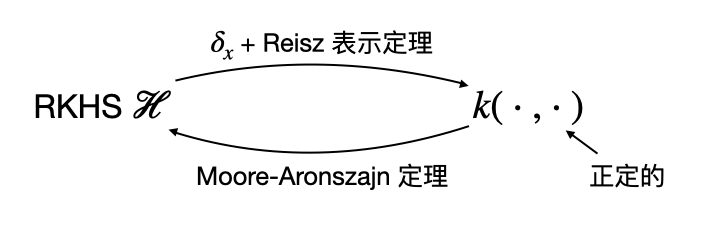
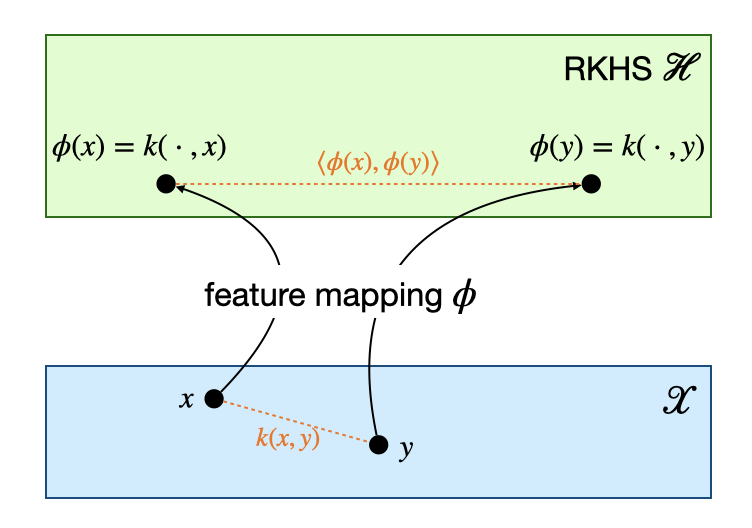

Reproducing Kernel Hilbert Space
\[ \newcommand{\coloneqq}{\mathrel{\mathrel{\vcenter{:}}=}} \]
引言
在学习 SVM 时，我们了解到了解决线性不可分问题的一种常用技巧——核方法。核方法的基本思想是，对于数据空间中线性不可分的样本，将它们映射到更高维度（甚至无穷维）的特征空间后就可以变成线性可分的。进一步地，我们引入了核函数来实现高维特征空间中的内积运算，而不需要先将数据点映射到特征空间后再算内积。
在之前的文章中，我们直接给出了几个常用核函数，但并没有说明怎样的函数可以成为核函数，核函数对应着怎样的特征映射和怎样的特征空间。要回答这些问题就需要学习再生核希尔伯特空间的相关内容。这部分内容需要泛函分析的前置知识，包括希尔伯特空间、对偶空间、Riesz 表示定理等，读者可参考泛函分析相关书籍。
再生核希尔伯特空间 (RKHS)
RKHS 的定义与性质
定义（evaluation functional）：设 \(\mathcal H\) 是非空集合 \(\mathcal X\) 上的泛函构成的希尔伯特空间，即其每个元素都形如 \(f:\mathcal X\to\mathbb R\). 对于任一给定的 \(x\in\mathcal X\)，称泛函： \[ \delta_x:\mathcal H\to\mathbb R,\quad f\mapsto \delta_x(f)=f(x) \] 为点 \(x\) 处的 (Dirac) evaluation functional.
容易知道 \(\delta_x\) 是线性的，这是因为对 \(\forall \alpha,\beta\in\mathbb R,\,\forall f,g\in\mathcal H\)，有： \[ \delta_x(\alpha f+\beta g)=(\alpha f+\beta g)(x)=\alpha f(x)+\beta g(x)=\alpha\delta_x(f)+\beta\delta_x(g) \] 那么一个自然的问题就是它是否是连续的（注意线性算子的连续与有界等价）？答案是不一定，于是我们把使所有 \(\delta_x\) 都连续的空间 \(\mathcal H\) 定义为再生核希尔伯特空间。
定义（再生核希尔伯特空间，RKHS）：设 \(\mathcal H\) 是非空集合 \(\mathcal X\) 上的泛函构成的希尔伯特空间。若对任意 \(x\in\mathcal X\)，\(\delta_x\) 都是连续（有界）的，那么称 \(\mathcal H\) 为再生核希尔伯特空间。
相比一般的希尔伯特空间，再生核希尔伯特空间有着一些好的性质，例如下面这条定理。
定理（\(\mathcal H\) 上依范数收敛可推出逐点收敛）：设 \(\{f_n\}\) 为 \(\mathcal H\) 中的一个序列，则： \[ \lim_{n\to\infty}\Vert f_n-f\Vert_{\mathcal H}=0\implies\lim_{n\to\infty}|f_n(x)-f(x)|=0,\,\forall x\in\mathcal X \] 证明：对任意 \(x\in\mathcal X\)， \[ |f_n(x)-f(x)|=|\delta_x(f_n)-\delta_x(f)|=|\delta_x(f_n-f)|\leq \Vert\delta_x\Vert\Vert f_n-f\Vert_{\mathcal H} \] 由于 \(\delta_x\) 有界，故当 \(n\to\infty\) 时，右侧趋近于 \(0\)，故 \(f_n(x)\to f(x)\). 证毕。
再生核的定义与性质
再生核希尔伯特空间的定义中并没有涉及任何跟“再生核”有关的东西，那么“再生核”究竟是什么呢？
定义（再生核）：设 \(\mathcal H\) 是非空集合 \(\mathcal X\) 上的泛函构成的希尔伯特空间。若函数 \(k:\mathcal X\times\mathcal X\to\mathbb R\) 满足：
- \(\forall x\in\mathcal X,\,k(\cdot,x)\in\mathcal H\)
- \(\forall x\in\mathcal X,\,\forall f\in\mathcal H\)，\(\langle f,k(\cdot,x)\rangle_\mathcal H=f(x)\)（再生性质）
则称函数 \(k\) 为 \(\mathcal H\) 的再生核。
再生性质可以理解为，\(f\) 作用在 \(x\) 上可以表示为 \(f\) 与 \(k(\cdot,x)\) 的内积。特别地，若取 \(f(\cdot)=k(\cdot,y)\)，则得到： \[ k(x,y)=\langle k(\cdot,x),k(\cdot,y)\rangle_{\mathcal H} \] 值得注意的是，再生核的定义与再生核希尔伯特空间的定义依旧毫不相干，它们之间究竟有什么联系呢？
定理（再生核的存在性）：\(\mathcal H\) 是一个再生核希尔伯特空间，当且仅当 \(\mathcal H\) 有一个再生核。
证明：首先证从右到左。设 \(k\) 为 \(\mathcal H\) 的再生核，我们希望证明对任意 \(x\in\mathcal X\)，\(\delta_x\) 都是有界的。对 \(\forall f\in\mathcal H\)，有： \[ |\delta_x f|=|f(x)|=|\langle f,k(\cdot,x)\rangle_{\mathcal H}|\leq\Vert f\Vert_{\mathcal H}\Vert k(\cdot,x)\Vert_{\mathcal H}=\Vert f\Vert_{\mathcal H}\langle k(\cdot,x),k(\cdot,x)\rangle_\mathcal H^{1/2}=\Vert f\Vert_\mathcal H k(x,x)^{1/2} \] 其中不等号应用了柯西不等式。这就证明了 \(\delta_x\) 是有界的。
然后证从左到右。设 \(\mathcal H\) 是一个再生核希尔伯特空间，我们只需要构造出一个再生核即可。根据 RKHS 的定义，对任一给定 \(x\)，\(\delta_x\) 是 \(\mathcal H\) 上的线性有界泛函，即 \(\delta_x\in\mathcal H'\)，那么根据 Riesz 表示定理，对 \(\forall f\in\mathcal H\)，存在 \(f_{\delta_x}\in\mathcal H\) 使得： \[ f(x)=\delta_x f=\langle f,f_{\delta_x}\rangle_{\mathcal H} \] 因此我们可以定义 \(k(\cdot,x)\coloneqq f_{\delta_x}(\cdot)\)，这样就满足了再生性质，因此函数 \(k\) 就是一个再生核。这就完成了证明。
上面的证明过程不仅说明了再生核的存在性，还借助 \(\delta_x\) 与 Reisz 表示定理给出了再生核。下面我们说明再生核是唯一的。
定理（再生核的唯一性）：若再生核 \(k\) 存在，则是唯一的。
证明：假设 \(\mathcal H\) 有两个再生核 \(k_1,k_2\)，那么对 \(\forall x\in\mathcal X,\,\forall f\in\mathcal H\)，有： \[ \langle f,k_1(\cdot,x)-k_2(\cdot,x)\rangle_{\mathcal H}=\langle f,k_1(\cdot,x)\rangle_{\mathcal H}-\langle f,k_2(\cdot,x)\rangle_{\mathcal H}=f(x)-f(x)=0 \] 特别地，取 \(f(\cdot)=k_1(\cdot,x)-k_2(\cdot,x)\)，那么有 \(\Vert k_1(\cdot,x)-k_2(\cdot,x)\Vert_\mathcal H=0\)，故 \(k_1=k_2\). 证毕。
最后我们说明再生核的一个重要性质——正定性。
定义（正定性）：设 \(h:\mathcal X\times\mathcal X\to\mathbb R\) 是对称函数，若对 \(\forall n\geq 1,\,\forall (a_1,\ldots,a_n)\in\mathbb R^n,\,\forall (x_1,\ldots,x_n)\in\mathcal X^n\)，都有： \[ \sum_{i=1}^n\sum_{j=1}^na_ia_jh(x_i,x_j)\geq0 \] 则称 \(h\) 是正定的。进一步，若对不同的 \(i,j\)，等式仅在所有 \(a_i=0\) 时才成立，则称 \(h\) 是严格正定的。
注：一些资料将上述定义的正定称为半正定，而严格正定称为正定。
定理：设 \(\mathcal H\) 是一个希尔伯特空间，\(\mathcal X\) 是一非空集合，映射 \(\phi:\mathcal X\to\mathcal H\). 那么 \(h(x,y)\coloneqq\langle\phi(x),\phi(y)\rangle_{\mathcal H}\) 是正定的。
证明： \[ \begin{align} \sum_{i=1}^n\sum_{j=1}^na_ia_jh(x_i,x_j)&=\sum_{i=1}^n\sum_{j=1}^n\langle a_i\phi(x_i),a_j\phi(x_j)\rangle_{\mathcal H}\\ &=\left\langle\sum_{i=1}^na_i\phi(x_i),\sum_{j=1}^na_j\phi(x_j)\right\rangle_{\mathcal H}\\ &=\left\Vert\sum_{i=1}^na_i\phi(x_i)\right\Vert_{\mathcal H}^2\geq0 \end{align} \] 证毕。
推论：再生核是正定的。
证明：由于 \(k(x,y)=\langle k(\cdot,x),k(\cdot,y)\rangle_\mathcal H\)，所以在上述定理中取 \(\phi(x)=k(\cdot,x)\)，可知再生核是正定的。证毕。
从正定函数构造 RKHS
在上一节中我们看到，一个 RKHS 具有唯一的再生核，且再生核是正定的。反过来，我们有 Moore-Aronszajn 定理：对于任意正定函数 \(k(\cdot,\cdot)\)，都可以构造出唯一的 RKHS \(\mathcal H\)，使得 \(k\) 是其再生核。构造过程包含两步：首先构造一个 pre-RKHS，然后将其完备化得到 RKHS. 具体过程如下。
首先，考虑到 RKHS 要求 \(\forall x\in\mathcal X,\,k(\cdot,x)\in\mathcal H\)，因此我们不妨取所有 \(k(\cdot,x)\) 做线性组合，张成 \(\mathcal H_0\) 空间： \[ \mathcal H_0=\text{span}\{k(\cdot,x)\}_{x\in\mathcal X}=\bigcup_{n=1}^{\infty}\left\{\sum_{i=1}^n\alpha_i k(\cdot,x_i)\ \Bigg\vert\ \alpha_i\in\mathbb R,\,x_i\in\mathcal X\right\} \] 并定义其上的内积为： \[ \langle f,g\rangle_{\mathcal H_0}=\sum_{i=1}^n\sum_{j=1}^m\alpha_i\beta_j k(x_i,y_j) \] 其中 \(f(\cdot)=\sum_{i=1}^n\alpha_ik(\cdot,x_i),\,g(\cdot)=\sum_{j=1}^m\beta_jk(\cdot,y_j)\).
值得强调一点的是，若取 \(g=k(\cdot,x)\)，则有： \[ \langle f,k(\cdot,x)\rangle_{\mathcal H_0}=\sum_{i=1}^n\alpha_i k(x_i,x)=f(x) \] 也就是说上面定义的内积具有再生性质。
不过，这样构造的 \(\mathcal H_0\) 不一定完备，因此姑且称作 pre-RKHS. 它满足两条性质：
- \(\delta_x\) 在 \(\mathcal H_0\) 上是连续的；
- \(\mathcal H_0\) 上的任一逐点收敛到 \(0\) 元素的柯西列 \(\{f_n\}\) 也依范数收敛到 \(0\) 元素。
注意第二条性质也意味着：\(\mathcal H_0\) 上逐点收敛到 \(f\) 的柯西列 \(\{f_n\}\) 也依范数收敛到 \(f\). 上述性质的详细证明见参考资料[1]的 4.5 节。
接下来，由于 \(\mathcal H_0\) 不一定完备，将 \(\mathcal H_0\) 延拓为 \(\mathcal H\)： \[ \mathcal H=\Big\{f:\mathcal X\to\mathbb R \mid \exists\{f_n\}\subset\mathcal H_0\;\text{s.t.}\;f_n\to f(n\to\infty)\Big\} \] 并定义 \(\mathcal H\) 上的内积 \(\langle f,g\rangle_{\mathcal H}\) 是 \(\mathcal H_0\) 中对应柯西列 \(\{f_n\},\{g_n\}\) 内积的极限，那么 \(\mathcal H\) 就是我们要构造的 RKHS.
说着虽然简单，但严格证明还是挺麻烦的。我们需要验证：
- \(\langle f,g\rangle_{\mathcal H}\) 是良定义的，即极限存在且独立于柯西列的选取；
- \(\langle f,g\rangle_{\mathcal H}\) 确实是一个内积，即满足内积的几条性质；
- \(\mathcal H\) 确实是一个希尔伯特空间，即是完备的；
- \(\mathcal H\) 确实是一个 RKHS，即 \(\delta_x\) 连续（有界）。
详细证明见参考资料[1]的 4.1-4.4 节。
综合上一节与这一节的结论，我们知道一个 RKHS 有唯一的再生核，该再生核是一个正定函数，因此根据 Moore-Aronszajn 定理可以反过来构造出一个 RKHS. 显然，这前后两个 RKHS 应该是相同的，否则违反了 RKHS 与再生核之间的一一对应关系。因此 RKHS 与再生核之间有如下的构造关系：

特征空间与核函数
再生核的定义似乎与我们学习 SVM 时核函数的定义并不一样，它们之间有什么关系呢？
定义（核函数）：设 \(\mathcal X\) 为一非空集合，函数 \(k:\mathcal X\times\mathcal X\to\mathbb R\). 如果存在希尔伯特空间 \(\mathcal H\) 和映射 \(\phi:\mathcal X\to\mathcal H\)，使得： \[ k(x,y)=\langle\phi(x),\phi(y)\rangle_\mathcal H,\quad \forall x,y\in\mathcal X \] 则称 \(k(\cdot,\cdot)\) 为核函数。此时也称 \(\mathcal H\) 为特征空间，\(\phi\) 为特征映射。
根据上文关于正定性的定理容易知道，核函数是正定的，于是根据 Moore-Aronszajn 定理可知，它是某唯一 RKHS 的再生核。反过来，对于再生核 \(k(\cdot,\cdot)\)，由于它满足 \(k(x,y)=\langle k(\cdot,x),k(\cdot,y)\rangle_\mathcal H\)，因此取 \(\phi(x)=k(\cdot,x)\) 可知，再生核是一个核函数，此时称 \(\phi\) 为 \(k\) 的典范 (canonical) 特征映射。综上，核函数与再生核也是一一对应的关系。
于是，综合以上所有内容，我们可以作出如下关系图：

现在我们就可以回答引言中的问题了：任何一个正定函数 \(k(\cdot,\cdot)\) 都可以是核函数，这个核函数对应的特征空间就是 Moore-Aronszajn 定理构造的 RKHS，对应的特征映射就是 \(\phi\)，其中 \(\phi(x)=k(\cdot,x)\).